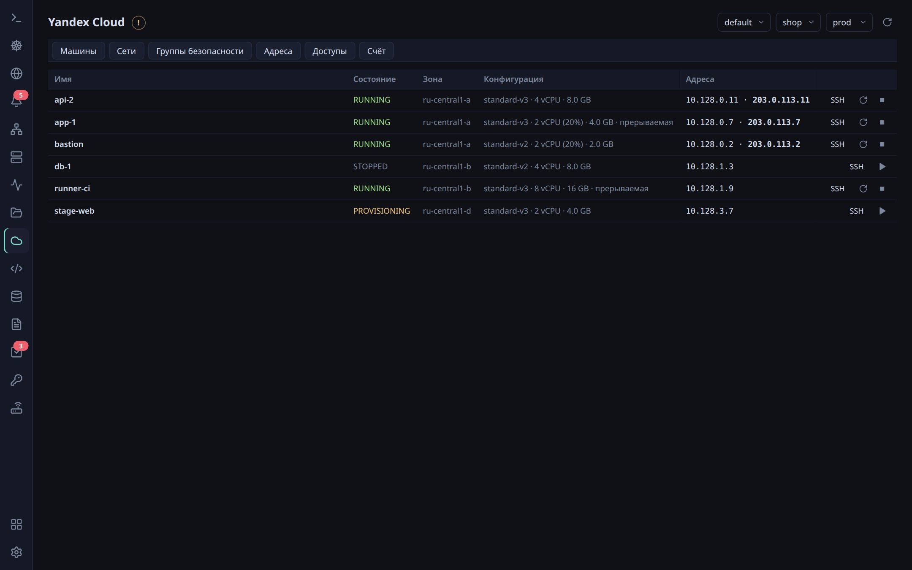

Подключения
SSH-хосты

Откройте SSH → ＋ Хост. Укажите адрес, порт, пользователя и при необходимости путь к ключу и jump-хост. Хосты из ~/.ssh/config также видны в списке; значок ⧉ сохраняет такой хост как профиль. Двойной клик открывает терминальную сессию. Пароль из KeePass, Passbolt или keyring копируется в буфер на 30 секунд и вставляется при запросе SSH через Ctrl+Shift+V.
Для мониторинга и файлов по SFTP используйте ключевой вход. Сначала подключитесь к хосту в терминале, чтобы принять его ключ. В карточке хоста можно записать контекст для AI: назначение сервера и ограничения на действия.
Kubernetes

Откройте Kubernetes → ＋ и выберите контексты из ~/.kube/config, вставьте YAML или перетащите kubeconfig. OpsDeck хранит импортированные конфигурации отдельно и не меняет исходный файл. Для рабочего кластера включите 🔒 Только чтение. В ⚙ → Kubernetes можно также подключить папку с kubeconfig; её файлы читаются на месте.
После подключения выберите кластер и namespace. Доступны ресурсы, проблемы, логи, YAML, shell, port-forward и действия над объектами — в пределах прав учётной записи Kubernetes. CPU/RAM потребуют metrics-server в кластере.
Веб-панели и алерты

Откройте Веб-панели → Добавить. Выберите Grafana, ArgoCD, GitLab, Alertmanager, Zabbix, AI-анализатор или произвольный URL. Укажите доступный с компьютера адрес и способ входа. Панели открываются вкладками; Alertmanager и Zabbix используются как источники алертов.
- Grafana: для сбора алертов создайте service account с ролью Viewer и токеном; выберите авторизацию токен, затем Сохранить и проверить. Токен собирает алерты, а вход в саму панель выполняется вручную. Для автовхода используйте логин/пароль или запись хранилища паролей.
- Alertmanager: укажите URL сервера, например
http://alertmanager:9093, настройте авторизацию, если она есть, и нажмите Сохранить и проверить. - Zabbix 6.0+: укажите URL и API-токен или логин/пароль. Для защищённого Basic auth есть отдельные поля.
- AI-анализатор: можно получать JSON-ленту по URL или отправлять находки на локальный приёмник. Точный формат и пример
curlпоказаны в форме коннектора.
Источники опрашиваются приложением; события появляются в 🔔 Алерты. Компьютер должен иметь сетевой доступ к их URL, в том числе через VPN, если источник внутренний.
Базы данных

В разделе Базы данных добавьте подключение: тип (PostgreSQL, MySQL/MariaDB, ClickHouse, Redis или MongoDB), адрес, порт, пользователя и источник пароля. Можно настроить TLS и SSH-хост для туннеля, если база доступна через бастион. Туннель использует ключевой SSH-вход. Для рабочей базы включите Только чтение; серверное ограничение записи поддерживается для PostgreSQL и ClickHouse.
После подключения дерево слева показывает структуру, справа доступны запросы, история и экспорт результата в CSV/JSON.
Хранилища паролей

- KeePass: откройте
.kdbxв разделе KeePass и введите мастер-пароль. База читается без изменения; записи затем выбираются в формах подключения. Настройка автоблокировки — в ⚙. - Passbolt 5.x: в профиле Passbolt скачайте
account-kit.passboltчерез Desktop app setup, затем выберите его в разделе Passbolt. При необходимости пройдите TOTP или YubiKey. Записи доступны для других подключений после разблокировки. - gopass: установите
gopassвPATHи подготовьте хранилище (gopass initилиgopass clone). Раздел читает записи через CLI; пароль GPG запрашиваетpinentry. - Системный keyring: выбирайте обычный пароль/токен в форме подключения; секрет хранится локально в системном хранилище.
Yandex Cloud и MikroTik

Для Yandex Cloud сначала установите yc и выполните yc init в терминале. OpsDeck использует существующие профили CLI. В разделе доступны машины, сети, адреса, сервисные и платёжные аккаунты; SSH к машине открывается из её карточки.
Для MikroTik нажмите ＋ Устройство, задайте адрес и порты WinBox/SSH, выберите источник учётных данных. Кнопки устройства открывают WinBox, SSH или ping. Сохранённые роутеры можно импортировать из WinBox.